13 Map projections (CRS)
13.0.1 What are map projections?
We use maps so often in everyday life that most of us probably forget that a map is just a two-dimensional representation of a three-dimensional object, namely the earth. For centuries, geographers and mathematicians wondered what the best way is to do this. Let us wonder with them for a second.
The world is shown as an orange below, not just to stimulate your appetite for this subject, but also since an orange peel is a good analogy for a two-dimensional map. A world map can be seen as an orange peel that is put flat on the table. The question is how to do this.
When we peel the orange, ideally we want to rip the peel near areas of the earth that are less interesting. What is interesting depends on the application; for applications where land mass is more important than wetlands, it is a good idea to make the rips in the oceans. The (interrupted) Goode homolosine projection, which is shown below, embodies this idea. All continents and countries are preserved, except Antarctica and Greenland. There is also a version of the Goode homolosine projection that focuses on preserving the oceans.
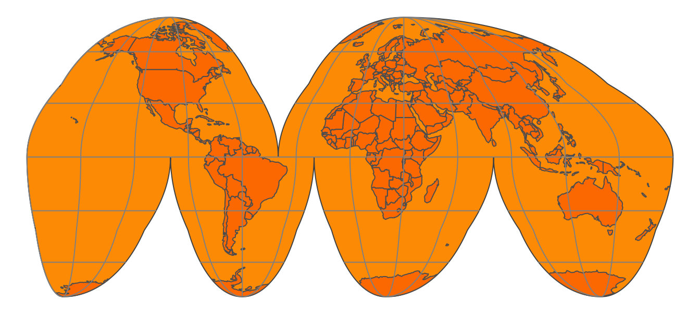
To make the analogy between the orange peel and the surface of the earth complete, we have to assign two fictitious properties to the orange peel, namely that it is stretchable and deformable. These properties are needed in order to make a non-interrupted map, as we will see in the next sections.
A method to flatten down the earth, for which the Goode homolosine projection shown in Figure 13.2 is an example, is called a map projection. Technically, it is also known as a coordinate reference system (CRS), which specifies the corresponding coordinate system, as well as the transformations to other map projections.
13.0.2 A model of the Earth
The orange and the Earth have another thing in common; both are spheres, but not perfect ones. The Earth is metaphorically speaking a little fat: the circumference around the equator is 40,075 km whereas around the circumference that crosses both poles is 40,009 km. Therefore, the earth can better be described as an ellipsoid. The same applies to an orange; every orange is a little different, but probably very few oranges are perfect spheres.
Although the ellipsoid is a good mathematical model to describe the earth’s surface, keep in mind that the surface of the earth is not smooth; land mass usually lies on a higher altitude than sea level. We could potentially map each point on the surface of the earth using a three-dimensional \((x, y, z)\) Cartesian coordinate system with the center of the mass of the Earth being the origin (0, 0, 0). However, since this has many mathematical complications, the ellipsoid is often sufficient as a model of the surface of the earth.
This ellipsoid model and its translation to the Earth’ surface is called a (geodetic) datum. The most popular datum is WGS84, which has been introduced in 1984 as an international standard, and has been last revised in 2004. There are many (slightly) different datums, which are often tailored for local applications. For instance, NAD83, ETRS89, and GDA94 are slightly better models for North-America, Europe, and Australia respectively. However, since WGS84 is a very good approximation of the earth as a whole, it has been widely adopted worldwide and is also used by the Global Positioning System (GPS).
When we have specified a datum, we are able to specify geographic locations with two familiar variables, namely latitude and longitude. The latitude specifies the north-south position in degrees, where latitude = 0\(^\circ\) is the equator. The latitudes for the north and south pole are 90\(^\circ\) and \(-90^\circ\) respectively. The longitude specifies the east-west position in degrees, where by convention, the longitude = 0\(^\circ\) meridian crosses the Royal Observatory in Greenwich, UK. The Longitude range is -180\(^\circ\) to 180\(^\circ\), and since this is a full circle, -180\(^\circ\) and \(^\circ\) specify the same longitude.
When we see the earth in its three-dimensional form, as in Figure 13.1, the latitude parallels are the horizontal lines around the earth, and the longitude meridians are the vertical lines around the earth. The set of longitude meridians and latitude parallels is also referred to as graticule. In all the figures in this section, latitude parallels are shown as gray lines for \(-60^\circ\), \(-30^\circ\), \(0^\circ\), \(30^\circ\) and \(60^\circ\), and longitude meridians from \(-180^\circ\) to \(180^\circ\) at every \(30^\circ\).
Please keep in mind that only a latitude and longitude are not sufficient to specify a geographic location. A datum is required. When people exchange latitude-longitude data, it is safe to assume that they implicitly have used the WGS84 datum. However, it is good practice to specify the datum explicitly.
13.0.3 Platte Carrée and Web Mercator
Let’s take a closer look at two widely used map projections, namely the plain latitude-longitude coordinate system (using the WGS84 datum) and the Web Mercator projection, which is currently the de facto standard for interactive maps. These projections are indexed as EPSG4326 and EPSG3857 respectively. EPSG is an institute that maintains a database of standard map projections.
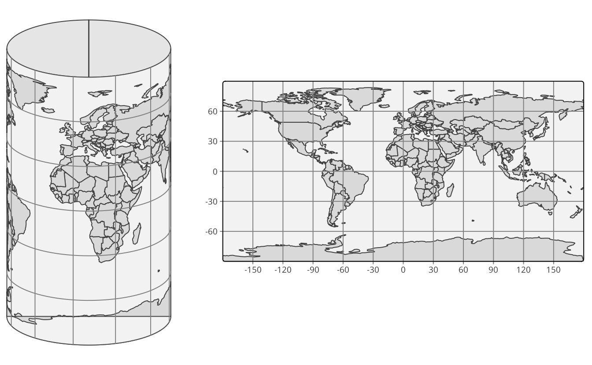
When we fictitiously make little holes in the orange peel at both poles, and stretch these open so wide that they have the same width as the equator, we obtain the cylinder depicted in Figure 13.3 (left). Note that the longitude lines have become straight vertical lines. When we unroll this cylinder, we obtain a map where the \(x\) and \(y\) coordinates are the longitude and latitude respectively. This CRS, which is known as EPSG4326, is shown in Figure Figure 13.3 (right).
EPSG4326 is an unprojected CRS, since the longitude and latitude have not been transformed. With projected CRSs, the \(x\) and \(y\) coordinates refer to specific measurement units, usually meters. The projected variant of this CRS is called the Platte Carrée (EPSG4087), and is exactly the same map as shown in Figure Figure 13.3 (right), but with other \(x\) and \(y\) value ranges.
Observe since we stretched the poles open, the area near the poles have been stretched out as well. More specifically, the closer the land is to one of the poles, the more it has been stretched out. Since the stretching direction is only horizontally, the shapes of the areas have become wider. A good example is Greenland, which is normally a ‘tall’ area (as can be seen in Figure 13.1).
In order to fix these deformed areas, Gerardus Mercator, a Flemish geographer in the 16th century introduced a method to compensate for this by inflating the areas near the poles even more, but now only in a vertical direction. This projection is called the Mercator projection. For web applications, this projection has been slightly modified and renamed to the Web Mercator projection (EPSG3857). The cylinder and plain map that uses this projection are shown in Figure 13.4.
Although the areas near the poles have been inflated quite a lot, especially Antarctica and Greenland, the shape of the areas is more or less correct, in particular regarding small areas (which can be seen by comparing with Figure 13.1. The Mercator projection is very useful for navigational purposes, and has therefore been embraced by sailors ever since. Also today, the Web Mercator is the de facto standard for interactive maps and navigation services. However, for maps that show data the (Web) Mercator projection should be used with great caution, because the hugely inflated areas will influence how we perceive spatial data. We will discuss this in the next section.
13.0.4 Types of map projections
Let us go back to the original question: how can we make a two-dimensional image of our three-dimensional earth? Although there are many ways, four basic map projection types can be distinguished. These are depicted in Figure 13.5.
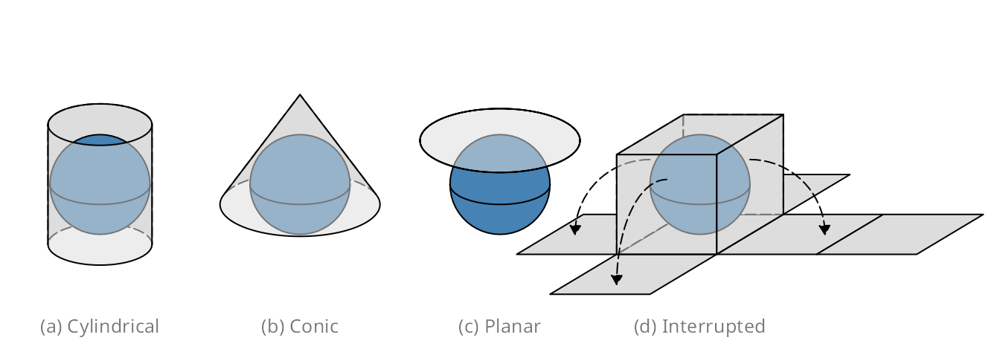
Examples for cylindrical projections have already been given in the previous section; both Platte Carrée and Web-Mercator are cylindrical. Another widely used cylindrical map projection is the Universal Transverse Mercator (UTM). The cylinder is not placed upright, but horizontal. There are 60 positions in which this cylinder can be placed, where in each position, the cylinder faces a longitude range of 6 degrees. In other words the UTM is not a single projection, but a series of 60 projections.
There are many projections which are pseudo-cylinders in the sense that the radius around the poles is smaller than around the equator. An example is the Robinson projection shown in Figure 13.6. Almost all commonly used standard World map projections are (pseudo-)cylindrical.
An example of a conic map projection is shown in Figure 13.7 (a). As a result of unfolding a cone on a flat surface, a gap is created. The size (angle) of this gap depends on the width of the cone. There are also pseudo-conic map projections in which some meridians (longitude lines) are curved. Conic map projections are useful for mid-latitude areas where the surfaces of the earth and the cone are almost parallel to each other.
Planar map projections, also known as azimuthal projections, project the Earth on a disk. This can be done in several ways. This can best be explained by the position of an imaginary light source. It can be placed inside the globe, at the surface of the globe opposite to the disk, and at an infinite distance opposite to the disk. The corresponding families of projections are called gnomonic, stereographic, and orthogonal projections.
Planar map projections are often used for a specific country or continent. An example is the Lambert Azimuthal Equal-Area projection (EPSG3035), shown in Figure 13.7 (b), which is optimized for Europe. It can be classified as a stereographic projection, although the light beams are not straight but curved. Another example of a planar map projection is the orange shown in Figure 13.1. This is an orthogonal projection.
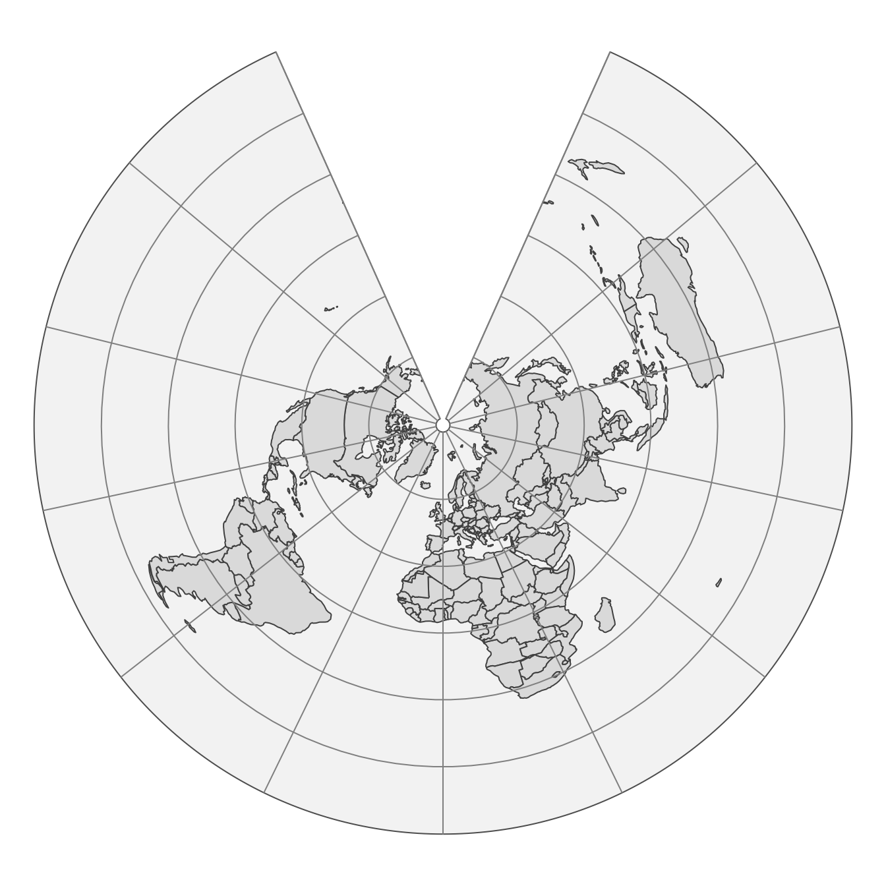
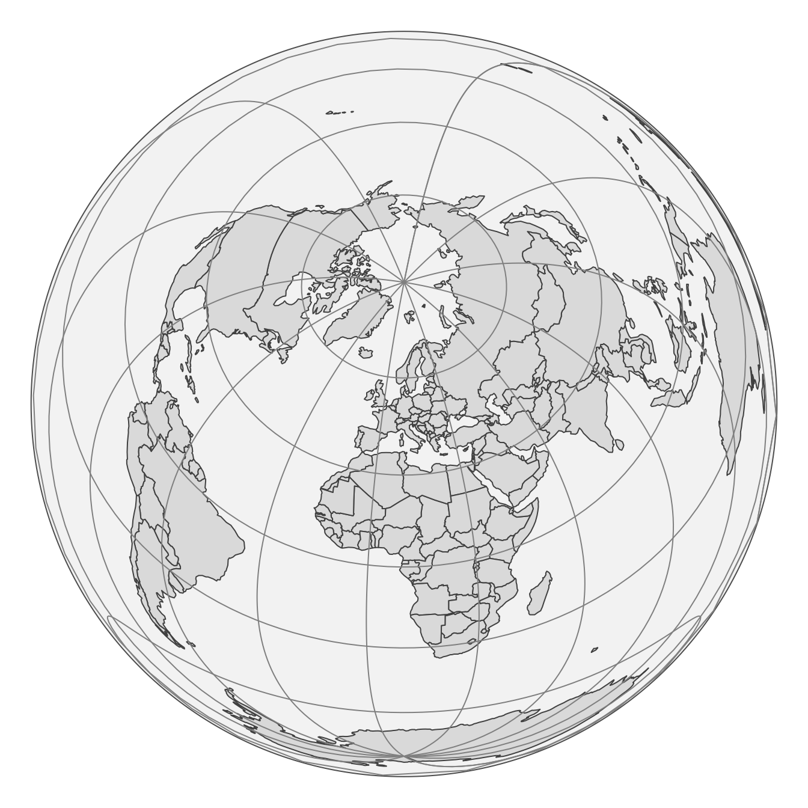
The (interrupted) Goode homolosine projection shown in Figure 13.2 is an example of an interrupted projection. A special class of these projections are polyhedral projections, which consists of planar faces. In Figure 13.5 a polyhedral of six faces is illustrated. There is no limit of the number of faces, as the myriahedral projections (TODO reference Van Wijck paper) illustrate.
13.0.5 Which projection to choose?
Hopefully it is clear that there is no perfect projection, since each projection has its pros and cons. Whether a projection is good for a certain application, depends on two factors. The first factor is the type of application and in particular which map projection properties are useful or even required for that application. For instance, navigation requires other map projection properties than statistical maps. The second factor is the area of interest. Is the whole World visualized or only a part, and in the latter case, which part? In this section, guidelines are provided to choose a proper projection based on those two aspects.
Before we go deeper into selecting a projection, it is worth noting that for many countries and continents, government agencies already have chosen projections to be the standard for mapping spatial data. For instance, a standard for Europe, which is used by Eurostat (the statistical agency of the European Union), is the Lambert Azimuthal Equal-Area projection shown in Figure 13.7 (b). If the area of interest has such a standard, it is recommended to use it, because it can be safely assumed that this standard is a proper projection, and moreover, it makes cooperation and communication with other parties easier. However, be aware of the limitations that this particular projection may have, and that there may be better alternatives out there.
Map projection properties
The type of application is important for the choice of a map projection. However, it would be quite tedious to list all possible applications and provide projection recommendations for each of them. Instead, we focus on four map projection properties. The key step is to find out which of these properties are useful or even required for the target application. The four properties are listed in the following table.
| Property | Conformal | Equal area | Equidistant | Azimuthal |
| Preserves | Local angle (shape) | Area | Distance | Direction |
| Applications | Navigation, climate | Statistics | Geology | Geology |
| Examples (cyclindrical) | Mercator | Gall-Peters, Eckert IV | Equirectangular | none |
| Examples (conic) | Lambert conformal conic | Albers conic | Equidistant conic | none |
| Examples (planar) | Stereographic | Lambert azimuthal equal-area | Azimuthal equidistant | Stereographic, Lambert azimuthal equal-area |
| Examples (interrupted) | Myriahedral | Goode homolosine, Myriahedral | none | none |
A conformal projection means that local angles are preserved. In practice, that means that for instance a map of a crossroad preserves the angles between the roads. Therefore, this property is required for navigational purposes. As a consequence that local angles are preserved, local shapes are also preserved. That means that an small island will be drawn on a map in its true shape, as seen from the sky perpendicular above it. The Web Mercator shown in Figure 13.4 satisfies this property; the closer an area is to one of the poles, the more it is enlarged, but since this is done in both dimensions (latitude and longitude), local shapes are preserved.
A map projection is called equal-area if the areas are proportional to the true areas. This is strongly recommended for maps that show statistics in order to prevent perceptual bias. Figure 13.8 shows two World maps of population density per country, one in the Web Mercator projection and the other in Eckert IV projection. The perception of World population is different in these maps; in (a) the vast lands on low-populated areas seem to be Canada, Greenland, and Russia, whereas in (b) also North Africa and Australia emerge as vast low-populated areas.
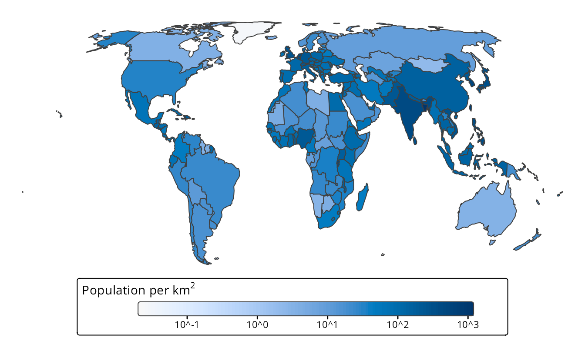
The other two map projection properties are related to one central point on the map. A map projection is called equidistant if the distances to any other point in the map are preserved, and azimuthal if the directions to any other point are preserved. These properties are in particular useful in the field of geology. One example is a seismic map around the epicenter of a recent earthquake, where it is important to how far and in which direction the vibrations are spreading.
A map projection can satisfy at most two of these properties. Many map projection do not satisfy any property but are intended as a compromise. An example is the Robinson projection, shown in Figure 13.6.
Area of interest
The next aspect that is important for the choice of a map projection is the area of interest. In general, the larger the area, the more concessions have to be made, since the larger the area, the more difficult it is to make a two-dimensional projection.
The following table provides recommendations of map projection types based on the area size and on the latitude of the area.
For World maps, pseudo-cylindrical map projections, such as the Robinson projection (Figure 13.6) and the Eckert IV projection (Figure 13.8 (b)) are very popular because they have less distortion other map projections. For areas that cover a half of the sphere, i.e. a hemisphere, azimuthal map projections are recommended. There are four hemispheres that are often used: the Northern and Southern Hemisphere, with respectively the North and South Pole as center, the Western Hemisphere consisting of the Americas, and the Eastern Hemisphere, which includes the other continents. However, other hemispheres are often used implicitly, such as a hemisphere centered on Europe used in the Lambert Azimuthal Equal-Area projection shown in Figure 13.7 (b).
For areas with the size of a continent or country, the azimuthal map projection type can be used when centered on the area of interest. In particular, the Lambert Azimuthal Equal-Area projection when equal area is required, and the Azimuthal Equidistant projection when preserving distances is important. Alternatively, cylindrical and conic map projection types can be used for areas at low and mid latitudes respectively. Another alternative is to use a UTM projection. However, this is only recommended when the target area spans less than 6 degrees longitude.
13.0.6 CRS in R
Coordinate Reference Systems (CRSs) are implemented in the software library PROJ. With implementation, we mean specifying a CRS and transforming coordinates from one CRS to another. PROJ is used by every popular software application for spatial data, in particular ArcGIS, QGIS, and GRASS GIS, and also by many programming languages, including R. The sf package integrates the PROJ functions into R.
A CRS is represented in R by an object of class crs, which can be retrieved or set with the function st_crs (from the sf package). In the following example, a crs object is created from an EPSG code, in this case 3035, the Lambert Azimuthal Equal-Area projection for Europe.
library(sf)
# CRS Lambert Azimuthal Equal-Area projection
st_crs("EPSG:3035")
#> Coordinate Reference System:
#> User input: EPSG:3035
#> wkt:
#> PROJCRS["ETRS89-extended / LAEA Europe",
#> BASEGEOGCRS["ETRS89",
#> ENSEMBLE["European Terrestrial Reference System 1989 ensemble",
#> MEMBER["European Terrestrial Reference Frame 1989"],
#> MEMBER["European Terrestrial Reference Frame 1990"],
#> MEMBER["European Terrestrial Reference Frame 1991"],
#> MEMBER["European Terrestrial Reference Frame 1992"],
#> MEMBER["European Terrestrial Reference Frame 1993"],
#> MEMBER["European Terrestrial Reference Frame 1994"],
#> MEMBER["European Terrestrial Reference Frame 1996"],
#> MEMBER["European Terrestrial Reference Frame 1997"],
#> MEMBER["European Terrestrial Reference Frame 2000"],
#> MEMBER["European Terrestrial Reference Frame 2005"],
#> MEMBER["European Terrestrial Reference Frame 2014"],
#> ELLIPSOID["GRS 1980",6378137,298.257222101,
#> LENGTHUNIT["metre",1]],
#> ENSEMBLEACCURACY[0.1]],
#> PRIMEM["Greenwich",0,
#> ANGLEUNIT["degree",0.0174532925199433]],
#> ID["EPSG",4258]],
#> CONVERSION["Europe Equal Area 2001",
#> METHOD["Lambert Azimuthal Equal Area",
#> ID["EPSG",9820]],
#> PARAMETER["Latitude of natural origin",52,
#> ANGLEUNIT["degree",0.0174532925199433],
#> ID["EPSG",8801]],
#> PARAMETER["Longitude of natural origin",10,
#> ANGLEUNIT["degree",0.0174532925199433],
#> ID["EPSG",8802]],
#> PARAMETER["False easting",4321000,
#> LENGTHUNIT["metre",1],
#> ID["EPSG",8806]],
#> PARAMETER["False northing",3210000,
#> LENGTHUNIT["metre",1],
#> ID["EPSG",8807]]],
#> CS[Cartesian,2],
#> AXIS["northing (Y)",north,
#> ORDER[1],
#> LENGTHUNIT["metre",1]],
#> AXIS["easting (X)",east,
#> ORDER[2],
#> LENGTHUNIT["metre",1]],
#> USAGE[
#> SCOPE["Statistical analysis."],
#> AREA["Europe - European Union (EU) countries and candidates. Europe - onshore and offshore: Albania; Andorra; Austria; Belgium; Bosnia and Herzegovina; Bulgaria; Croatia; Cyprus; Czechia; Denmark; Estonia; Faroe Islands; Finland; France; Germany; Gibraltar; Greece; Hungary; Iceland; Ireland; Italy; Kosovo; Latvia; Liechtenstein; Lithuania; Luxembourg; Malta; Monaco; Montenegro; Netherlands; North Macedonia; Norway including Svalbard and Jan Mayen; Poland; Portugal including Madeira and Azores; Romania; San Marino; Serbia; Slovakia; Slovenia; Spain including Canary Islands; Sweden; Switzerland; Türkiye (Turkey); United Kingdom (UK) including Channel Islands and Isle of Man; Vatican City State."],
#> BBOX[24.6,-35.58,84.73,44.83]],
#> ID["EPSG",3035]] A crs object is represented by Well Known Text (WKT). It includes a specification of the used datum as well as information how to transform it into other CRSs. Understanding the exact content of the WTK is not important for most users, since it is not needed to write a WKT yourself.
A crs object can be created in several ways:
- The first is with an EPSG number as user input specification as shown above.
- The second is also with a user input specification, but with a so-called proj4 character string. The proj4 character string for the LAEA projection is
"+proj=laea +lat_0=52 +lon_0=10 +x_0=4321000 +y_0=3210000 +ellps=GRS80 +units=m +no_defs". However, proj4 character strings should be used with caution since they often lack important CRS information regarding datums and CRS transformations. Also note that the name proj4 stands for the PROJ library version 4, while the current major version of PROJ at the time of writing is already 8. - The third way is to provide some WKT definition of the projection.
- The last way to create a
crsobject is to extract it from an existing spatial data object (e.g., an sf or stars object) using thest_crs()function.
A crs object can define a new spatial object’s projection or transform an existing spatial object into another projection. In the example below, we created a new object, waterfalls, with names and coordinates of three famous waterfalls. Next, we converted it into a spatial object of the sf class, waterfalls_sf() with st_as_sf(). We can see that our object’s coordinate reference system is not defined with the st_crs() function.
# create a data.frame of three famous waterfalls
waterfalls = data.frame(name = c("Iguazu Falls", "Niagara Falls", "Victoria Falls"),
lat = c(-25.686785, 43.092461, -17.931805),
lon = c(-54.444981, -79.047150, 25.825558))
# create sf object (without specifying the crs)
waterfalls_sf = st_as_sf(waterfalls, coords = c("lon", "lat"))
# extract crs (not defined yet)
st_crs(waterfalls_sf)
#> Coordinate Reference System: NAThis function also allows us to specify CRS of our object - in this example, coordinates of our object are in the WGS84 coordinate system, and thus we can use the EPSG code of 4326. We can also confirmed that our operation was successful also using st_crs().
# specify crs
st_crs(waterfalls_sf) = "EPSG:4326"
# extract crs
st_crs(waterfalls_sf)
#> Coordinate Reference System:
#> User input: EPSG:4326
#> wkt:
#> GEOGCRS["WGS 84",
#> ENSEMBLE["World Geodetic System 1984 ensemble",
#> MEMBER["World Geodetic System 1984 (Transit)"],
#> MEMBER["World Geodetic System 1984 (G730)"],
#> MEMBER["World Geodetic System 1984 (G873)"],
#> MEMBER["World Geodetic System 1984 (G1150)"],
#> MEMBER["World Geodetic System 1984 (G1674)"],
#> MEMBER["World Geodetic System 1984 (G1762)"],
#> MEMBER["World Geodetic System 1984 (G2139)"],
#> ELLIPSOID["WGS 84",6378137,298.257223563,
#> LENGTHUNIT["metre",1]],
#> ENSEMBLEACCURACY[2.0]],
#> PRIMEM["Greenwich",0,
#> ANGLEUNIT["degree",0.0174532925199433]],
#> CS[ellipsoidal,2],
#> AXIS["geodetic latitude (Lat)",north,
#> ORDER[1],
#> ANGLEUNIT["degree",0.0174532925199433]],
#> AXIS["geodetic longitude (Lon)",east,
#> ORDER[2],
#> ANGLEUNIT["degree",0.0174532925199433]],
#> USAGE[
#> SCOPE["Horizontal component of 3D system."],
#> AREA["World."],
#> BBOX[-90,-180,90,180]],
#> ID["EPSG",4326]]Alternatively, it is possible to set the CRS when creating a new sf object, as you can see below.
The st_transform() function is used to convert the existing spatial object’s coordinates into another projection. For example, let’s transform our waterfalls_sf object to the Equal Earth projection (EPSG 8857).
waterfalls_sf_trans = st_transform(waterfalls_sf, "EPSG:8857")
waterfalls_sf_trans
#> Simple feature collection with 3 features and 1 field
#> Geometry type: POINT
#> Dimension: XY
#> Bounding box: xmin: -6580000 ymin: -3240000 xmax: 2420000 ymax: 5260000
#> Projected CRS: WGS 84 / Equal Earth Greenwich
#> name geometry
#> 1 Iguazu Falls POINT (-4969711 -3244138)
#> 2 Niagara Falls POINT (-6583123 5261565)
#> 3 Victoria Falls POINT (2416945 -2285044)Figure 13.9 shows the data in the WGS84 coordinate system on the top and in the Equal Earth projection on the bottom. You can see here that the decision of the projection used has an impact not only on the coordinates (notice the grid values), but also the continents’ shapes.
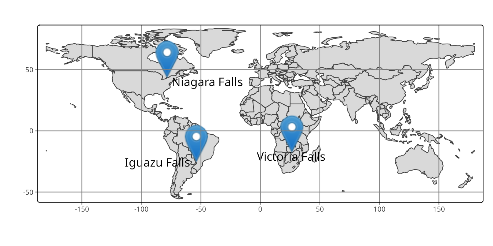
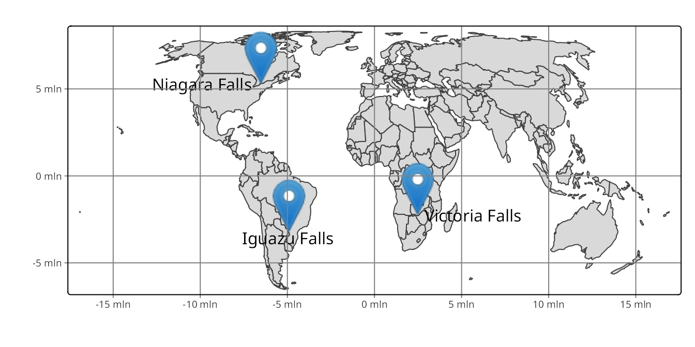
13.1 Specifying map projections
tm +
tm_crs("+proj=eck4")
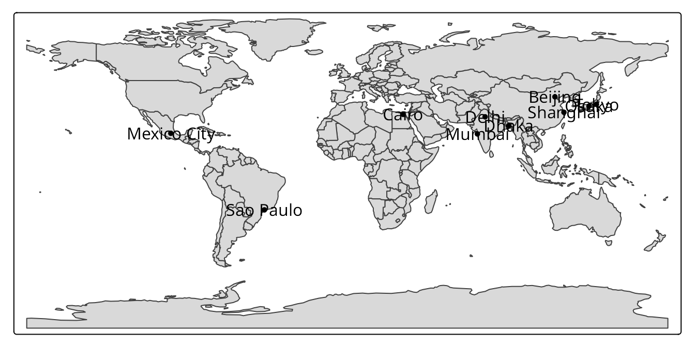
tm +
tm_crs("auto")
13.2 Global map projections
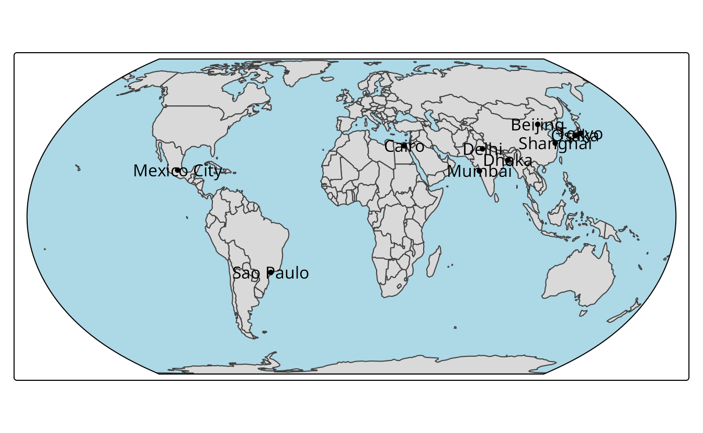
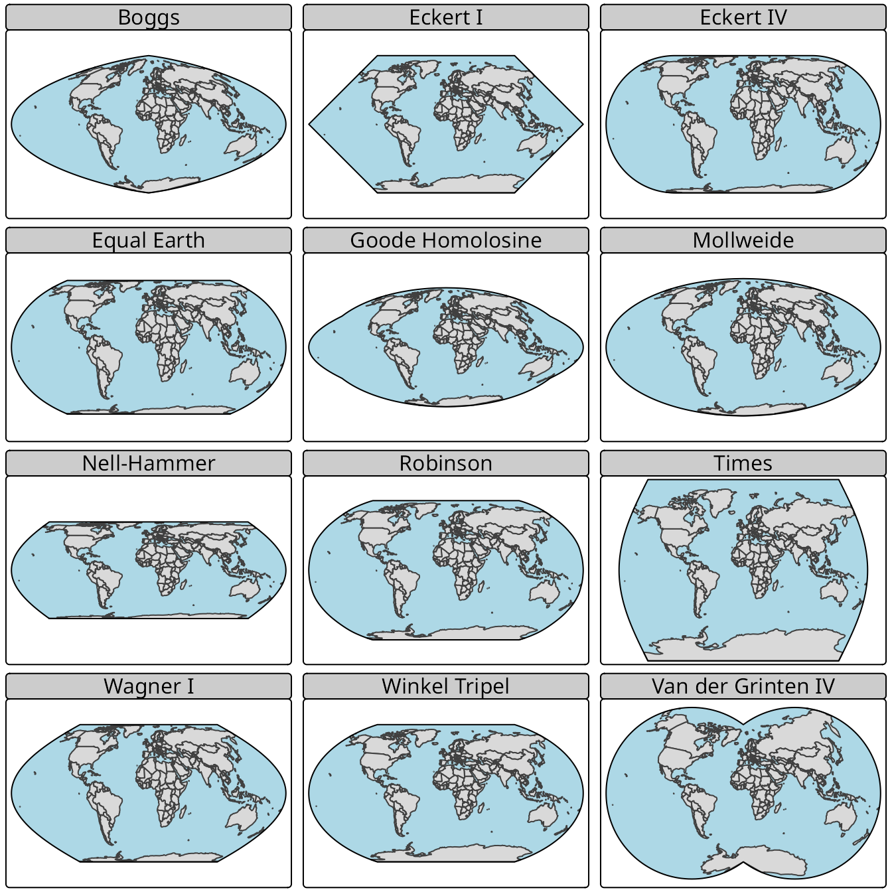
tm_shape(worldvector) +
tm_polygons() +
tm_shape(worldcities) +
tm_dots() +
tm_text("name") +
tm_graticules(labels.show = FALSE) +
tm_crs("+proj=ortho +lat_0=30 +lon_0=0", bbox = "FULL")+
tm_layout(bg.color = "lightblue",
earth_boundary = TRUE,
frame = FALSE)
tm_shape(worldvector) +
tm_polygons() +
tm_shape(worldcities) +
tm_dots() +
tm_text("name") +
tm_graticules(labels.show = FALSE) +
tm_crs("+proj=ortho +lat_0=0 +lon_0=100", bbox = "FULL")+
tm_layout(bg.color = "lightblue",
earth_boundary = TRUE,
frame = FALSE)
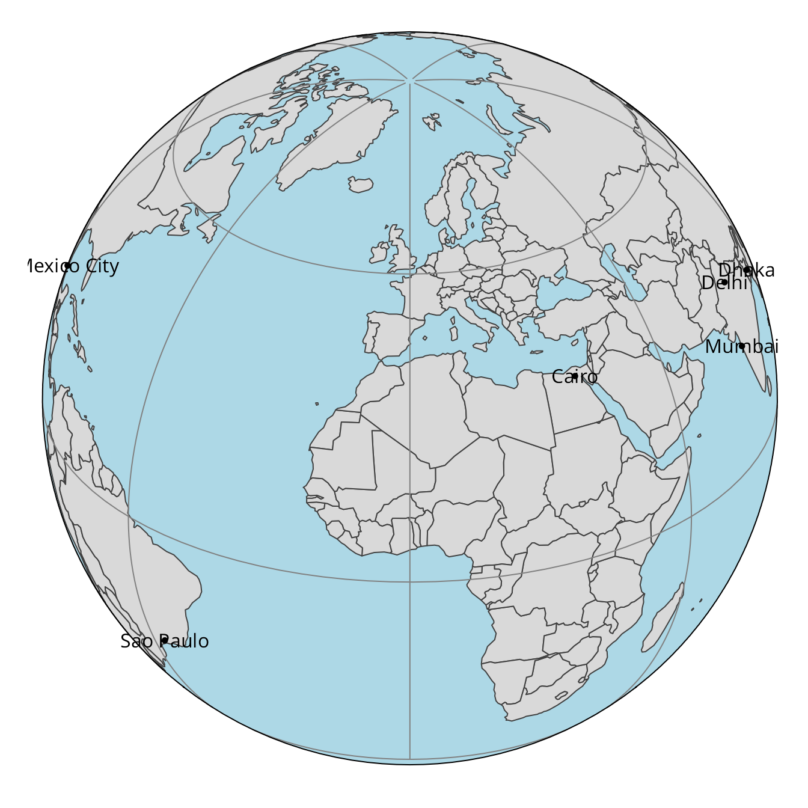
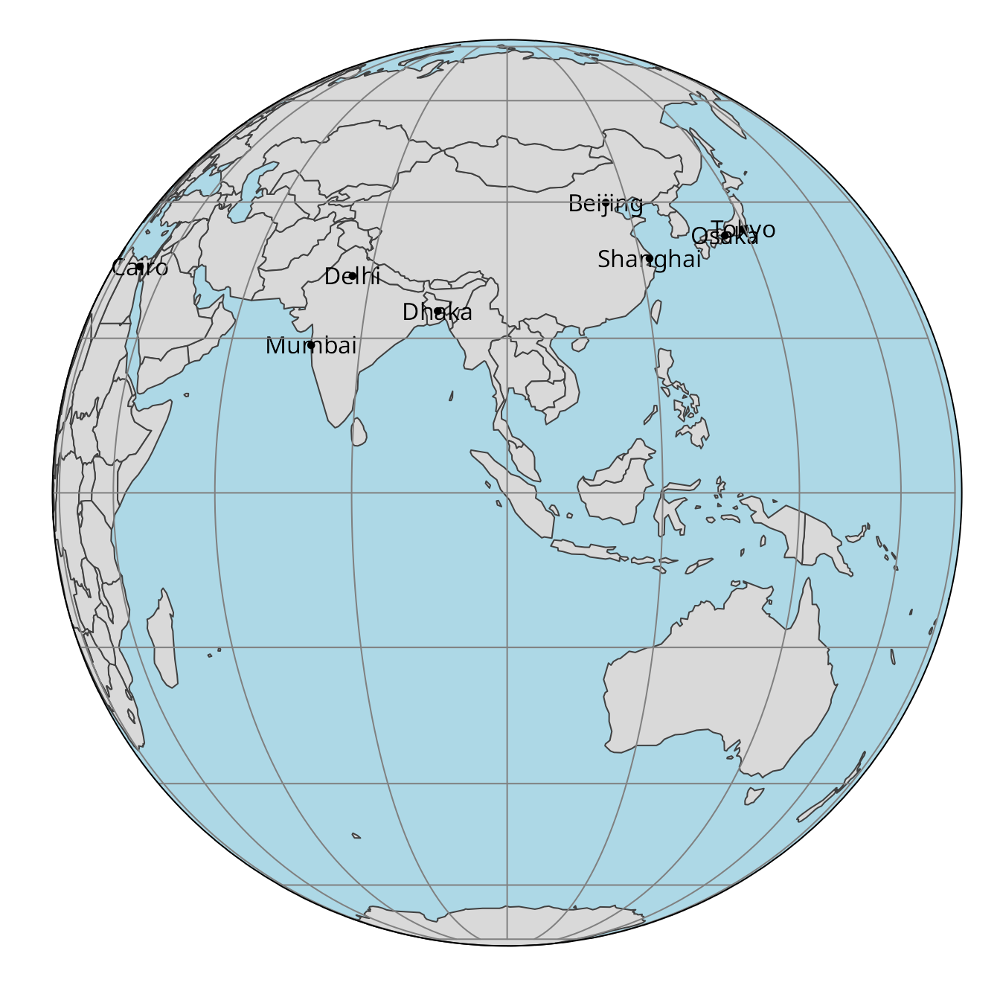